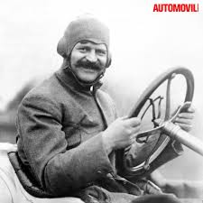
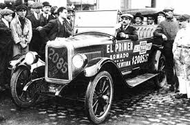
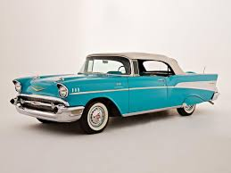
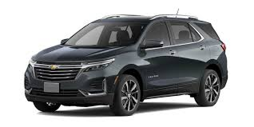

Historia de Chevrolet
La marca Chevrolet nació el 3 de noviembre de 1911 en Detroit, Estados Unidos, fundada por Louis Chevrolet, un piloto de carreras suizo, y William C. Durant, un visionario empresario que también fue el creador de General Motors (GM). Durant había sido expulsado de GM en 1910 y vio en Chevrolet la oportunidad perfecta para volver al negocio automotriz. Louis Chevrolet aportó su talento para el diseño y la ingeniería, mientras que Durant puso su experiencia comercial.
Durante las décadas de 1920 y 1930, Chevrolet se consolidó como la marca más popular de General Motors y una de las más vendidas de Estados Unidos. Su filosofía era clara: ofrecer autos de calidad, confiables, con buen rendimiento y a precios accesibles para la clase trabajadora. En esos años, modelos como el Chevrolet Series AB (1928) y el Master Deluxe (1933) marcaron tendencia con su estilo aerodinámico y su tecnología avanzada para la época.
Tras la guerra, Chevrolet regresó con fuerza al mercado civil. En los años 50 y 60 vivió su época dorada, con modelos que se convirtieron en leyendas. El Chevrolet Bel Air (1953) representó el lujo americano, mientras que el Chevrolet Corvette (1953) marcó un hito al ser el primer auto deportivo estadounidense de producción masiva.
Hoy, Chevrolet continúa innovando con tecnología eléctrica, inteligencia artificial y seguridad avanzada, sin dejar de lado su identidad histórica: fabricar autos que combinan rendimiento, diseño y accesibilidad. Más de un siglo después de su fundación, Chevrolet sigue siendo un símbolo del espíritu americano y un referente mundial del automovilismo.